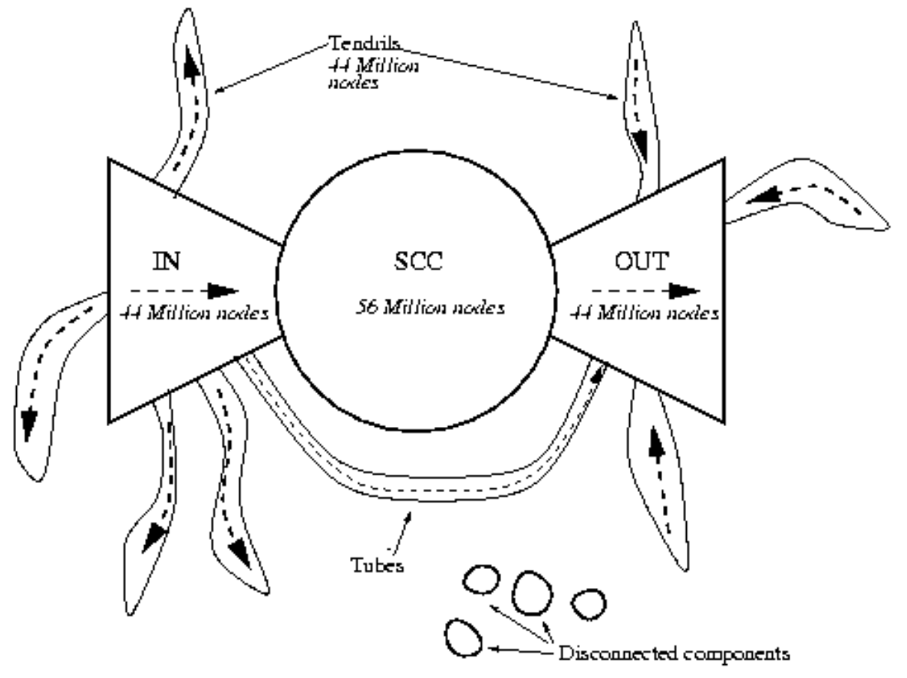

AR - Lesson 17
Indice
World Wide Web
Se stai leggendo questi appunti certamente hai usato (e sai usare) il Web.
Il Web è un'appicazione sviluppata da Tim Berners-Lee nel periodo 1989-1991 per consentire alle persone di condividere informazioni tramite internet.
L'architettura del web è di tipo client-server e il suo funzionamento può essere descritto in due principi:
- delle informazioni sono salvate su delle macchine server e resi disponibili tramite internet sotto forma di pagine web.
- un'applicazione client (per esempio un browser) richiede tali pagine Web pubblicamente accessibili.
Questa in sintesi è la struttura fisica del web.
Ciò che è interessante è invece l' organizzazione logica delle pagine web. Le pagine web possono referenziare in maniera diretta altre pagine web, tramite dei riferimenti o link. Perciò possiamo pensare al web come un grafo diretto in cui i nodi sono le pagine web, e gli archi sono i riferimenti tra una pagina e un'altra. Per questo motivo una pagina web viene anche detta ipertesto.
Precursori dell'ipertesto
Un primo precursore intelletuale del concetto di ipertesto è il concetto di reference.
Negli articoli o nei libri, quando si necessità indirizzare a informazioni supplementari o semplicemente citare il proprietario intelletuale di una informazione, si fanno dei riferimenti ad altri libri o articoli.
Anche in questo caso si crea un grafo diretto i cui nodi sono i libri o gli articoli e gli archi sono i riferimenti.
La differenza sostanziale però con l'ipertesto è la linea temporale nella quale si fanno i riferimenti.
Se un libro X fa una citazione a un articolo Y vuol dire che Y è stato scritto e pubblicato prima di X, perciò non ci potranno essere riferimenti ad X nell'articolo Y.
Invece nel rete del Web abbiamo degli archi bidirezionali, ovvero capita spesso di trovare due pagine che si referenziano reciprocamente.
Un altro precursore dell'ipertesto sono le cosidette crossing-references, o riferimenti incrociati. Tale tipo di organizzazione la troviamo per esempio in una enciclopedia, e consente di collegare argomenti differenti attraverso una catena di collegamenti semantici o riferimenti tra altri arogmenti.

Figura 1: Cross-references.
Per esempio la Figura 1 mostra come tramite riferimenti incrociati di Wikipedia possiamo connettere gli Equilibri di Nash con la Nasa.
MEMEX
Vannevar Bush nel suo articolo "As we may think" del 1945 cercò di immaginare come le moderne tecnologie di comunizaione emergenti all'epoca avrebbero influenzato il mondo, grazie alle rivoluzionarie tecniche di archiviazione, scambio e accesso di informazioni.
In particolare Bush osservò che i metodi tradizionali per archiviare le informazioni in un libro, in una biblioteca o nella memoria di un computer erano altamente lineari.
Basta pensare a un dizionario enciclopedico in cui tutti gli argomenti sono ordinati uno dopo l'altro.
D'altra parte la mente umana struttura e accede alla propria esperienza mostrando quella che potrebbe essere definita una memoria associativa, ovvero è strutturata in una rete semantica di concetti.
Tu pensi a una cosa, te ne ricorda un'altra tramite una connessione, dopodiché ti viene un intuizione che ti porta ad un terzo pensiero, e così via…
Bush ha quindi immaginato un sistema che cercava di imitare questo stile di memoriazione associativa, il MEMEX, ovvero una versioni digitalizzate di tutta la conoscenza umana collegate da collegamenti associativi. Infatti Bush fu esplicitamente citato da Tim Berners Lee quando progettò il Web.
Web 2.0
Inizialmente il Web era costituito da una collezione di pagine statiche al cui interno erano (eventualmente) presenti degli hyperlink ad altre pagine.
Tali hyperlink sono detti navigazionali in quanto servono appunto per "navigare" nel Web, esattamente come noi navighiamo nella nostra conoscienza, implementando così la memoria associativa.
Col tempo però il Web si è evoluto, passando da pagine totalmente statiche a pagine che consentono di effettuare delle azioni, come per esempio sottomettere una richiesta a un server oppure effettuare dei pagamenti.
I link che consentono di effettuare tali azioni sono detti appunto transazionali.
Altre evoluzioni sono per esempio l'avvento dei servizi, come per esempio:
- la creazione e mantenimento di contenuti in maniera condivisa con Wikipedia.
- lo scambio di messaggio con i servizi di web-mailing.
- reti che connettono individui anziché documenti con i social-media.
- reti che connettono video con YouTube.
Con tali evoluzioni si indica il cosidetto Web 2.0.
Il Grafo diretto del Web
Come abbiamo già accennatto il Web può essere visto come un grafo diretto, in cui i nodi sono le pagine e gli archi sono gli hyperlink tra esse.
Una osservazione abbastanza intuitiva che si può fare è quella che un pagina web conosce solamente le pagine a cui punta, ovvero i cosidetti archi uscenti, e non le pagine da cui è puntata, ovvero gli archi entranti.
In uno studio del 2000 si osservò che il grafo del web, composto da milioni di nodi, ha una forma a bow-tie, ovvero a fiocco.
Al centro è presente una componente fortemente connessa (che indicheremo con SCC, Strongly Connected Component) composta dalla maggior parte dei nodi.
In tale componente, per ogni pagina web X della componente è possibile trovare una serie di link che collegano X verso qualsiasi altra pagina in SCC, e viceversa da qualsiasi altra pagina è possibile navigare e raggiungere X.
Dopodiché si osservò la presenza di altre due componenti che formavano una sorta di "flusso" in entrata e uscita da SCC.
Le componenti sono:
- IN: composta dai nodi dai quali navigando è possibile raggiungere
SCC, ma non raggiungibili in alcun modo da daSCC. Questa componente rappresenta quindi il flusso in entrata inSCC. - OUT: compsta dai nodi raggiungibili da
SCCtramite una navigazione ma che a loro volta non possono raggiugereSCC. Questa componente rappresenta quindi il flusso in uscita inSCC.
Altre componenti osservate nel grafo del web sono:
- Tendrils: o "tentacoli" è una componente composta da:
- nodi che sono raggiungibili dai nodi presenti nella componente
INma dai quali non si può raggiungereSCC. - nodi attraverso i quali si può raggiungere la componente
OUTma i quali non sono raggiungibili dai nodi inSCC.
- nodi che sono raggiungibili dai nodi presenti nella componente
- Tubi: composto dai nodi che creano un flusso che collegga la componente
INalla componenteOUTsenza quindi mai passarre attraversoSCC. - Componenti disconnesse: una serie di nodi disconnessi dalla struttura a fiocco.

Figura 2: Una immagine semantica che rappresenta la struttura a fiocco del Web.
Link Analysis and Web Search
Il problema della ricerca
Il problema di classificare e ricercare documenti è un problema antico.
Prima dell'avvento del Web, la difficoltà nel ricercare documenti era sostanzialmente dovuta alla scarsità di questi ultimi.
Infatti, un tempo bisognava raggiungere fisicamente una biblioteca, libreria o archivio per avere accesso a libri, articoli o documenti, e inoltre non ce n'erano a disposizione una grande quantità.
Tuttavia c'era un vantaggio, i documenti in generale erano catalogati in categorie, perciò a chi interessava avere informazioni su un determinato argomento bastava recarsi nel luogo in cui erano raccolti i documenti relativi all'argomento interessato.
Per esempio, a un avvocato che necessita delle schede penali di alcune persone basta andare in un archivio di un tribunale.
Oppure se ti interessa trovare un nuovo romanzo da leggere, basta andare in libreria nella sezione "Romanzi" e troverai una raccolta di libri inerenti al genere che ti interessa.
Il Web ha letteralmente capovolto i ruoli.
Adesso chiunque ha acesso a una infinità di documenti in letteralmente pochissimi istanti.
Il problema principale invece è appunto questa sovrabbondanza di documenti, i quali purtroppo non sono catalogati e raggruppati in categorie.
Purtroppo proprio per questa eterogeneità dei documenti, non è possibile effettuare una ricerca specializzata per parole chiave.
Oltre al fatto che il numero di parole chiave è potenzialmente illimitato, una parola assume differenti significati.
Infatti per esempio la parola "albero" in teoria dei grafi è un grafo particolare, mentre in botanica è un tipo di pianta, oppure ancora può poter significare un albero genealogico.
Si vuole quindi definire uno strumento di web search che consenta di effettuare una ricerca catalogando in base a delle parole chiave e scartando tutte le pagine non coerenti.
Questa però non è una condizione sufficiente affinché uno strumento di web search risulti utile.
Infatti, come risultato di una ricerca, potrebbe essere restituito un insieme potenzialmente immenso di pagine inerenti alle parole chiave.
Perciò è necessario che tale strumento in qualche modo sfoltisca le pagine meno rilevanti, restituendo così un inseme abbastanza piccolo da essere umanamente visitato, e possibilmente
ordinando queste pagine in un ordine di rilevanza, ovvero effettuando un ranking delle pagine restituite.
Link Analysis
Purtroppo il contenuto interno di una pagina non consente da solo di quantificarne con precisione la sua rilevanza rispetto alla ricerca in corso.
Un primo strumento utile che consente invece di capire meglio la rilevanza di una pagina sono gli hyperlink.
Consideriamo prima un esempio:
Staimo studiando un articolo utile per fare una tesi. Per capire meglio l'argomento un solo articolo non basta, perciò decidiamo di attingere dalla bibliografia dell'articolo. Purtroppo notiamo che sono presenti svariate decine di citazioni ad altri articoli. Non potendo leggerli tutti quanti, è sensato considerare gli articoli che più hanno citazioni in generale.
Prendendo quindi come base questo esempio, dopo aver escluso tutte quelle pagine non inerenti alla nostra ricerca, possiamo ordinarle in ordine non crescente di numero di referimenti.
Più precisamente, mettiamo tra i primi risultati della ricerca tutte quelle pagine che all'interno del sottoinsieme di pagine inerenti alla ricerca sono maggiormente puntate da hyperlink.
Ovvero la rilevanza di una pagina è calcolata analizzando i link che la coinvolgono.